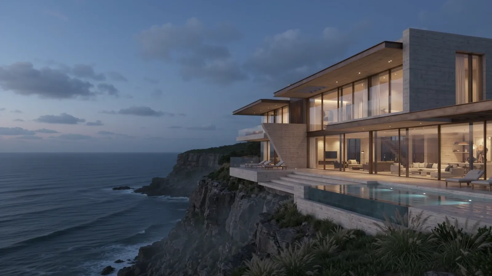

NORMANDIE
02 / RÉSIDENCE
Manoir Minéral
Réhabilitation poétique d'un domaine du XVIIIe siècle, sublimé par un atrium de verre et des menuiseries d'acier noirci.
L'ART D'HABITER / 001
Nous dessinons des lieux qui ne se contentent pas d'être admirés. Des espaces qui se vivent, se ressentent et traversent le temps.
01 NOTRE PHILOSOPHIE
Nous croyons en une architecture qui laisse parler la lumière, la matière et le paysage. Une écriture sensible, où chaque détail trouve sa juste place, libérée des artifices pour révéler la grandeur du site.
Un savoir-faire rodé aux chantiers les plus complexes en France et à l'international.
Résidences d'exception, pavillons de dégustation et réhabilitations patrimoniales.
Chaque tracé naît d'une analyse bioclimatique, topographique et géologique rigoureuse.
Lauréats Prix d'Excellence d'Architecture Contemporaine & publications AD.
02 PROJETS & CRÉATIONS
UNE COLLECTION / QUATRE HORIZONS
Une résidence face à l'infini. La roche, la lumière et l'océan composent une architecture dont la force réside dans l'épure et la fusion totale avec la falaise.
Réhabilitation poétique d'un domaine du XVIIIe siècle, sublimé par un atrium de verre et des menuiseries d'acier noirci.
Béton sablé teinté ocre, claustras en noyer massif et bassins réfléchissants qui dialoguent avec la pinède du Luberon.
Structure légère en bois brûlé (Shou Sugi Ban) et baies monumentales cadrent les sommets enneigés avec une sobriété monacale.
03 FONDATIONS & ENGAGEMENT
Chaque projet commence par une écoute attentive du terrain. Nous ne posons pas un édifice sur un sol : nous faisons émerger le bâtiment de sa géographie et de son histoire.
La lumière n'est pas un accessoire : c'est notre matière première. Nous ciselons les percées et les parois pour créer des chorégraphies d'ombres évolutives du lever au crépuscule.
La beauté véritable résiste à l'usure des modes. Nous collaborons avec des compagnons et artisans d'art pour concevoir des ouvrages pérennes qui acquièrent une patine noble.
04 PROCESSUS EXCLUSIF
DU PREMIER CROQUIS AU DERNIER DÉTAILArpentage minutieux du site, relevé sensitif de la lumière, étude géologique et recueil exhaustif de vos rituels de vie et inspirations profondes.
Naissance du parti architectural, maquettes volumétriques physiques, modélisation 3D photoréaliste et simulation des transparences solaires.
Élaboration du dossier technique de consultation, sélection d'artisans d'art certifiés, choix des échantillons en carrières et calepinement d'orfèvre.
Direction artistique exclusive, contrôle hebdomadaire des alignements, mise en lumière finale et remise des clés de votre sanctuaire intemporel.
05 RENCONTRE & CONSULTATION
Chaque grande œuvre débute par une écoute attentive. Que vous possédiez un terrain d'exception ou un édifice patrimonial à sublimer, échangeons en toute confidentialité.